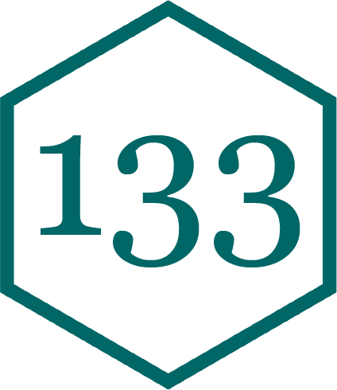

Share your data and document your work
Edit man/strsplit1.Rd by hand, in Rd markup (\title{}, \arguments{}, \value{}, \examples{}).
Rebuild and reinstall at the terminal:
Restart R, then library(mypkg) and ?strsplit1.
usethis
Automates repetitive tasks that arise during package setup and development.
Examples:
use_r("strsplit1"): Creates (or opens) R/strsplit1.R for the function’s codeuse_data("bell"): Saves an object from your environment to data/strsplit1() backAfter use_r("strsplit1"), paste the function into the new file:
devtools
Makes package development easier by providing R functions that simplify and expedite common tasks.
Examples:
create(): Like package.skeleton but with moredocument(): Creates man filesWhy put data into a package?
Demonstrate functionality
# A tibble: 20,778 × 13
name year month day hour lat long status category wind pressure
<chr> <dbl> <dbl> <int> <dbl> <dbl> <dbl> <fct> <dbl> <int> <int>
1 Amy 1975 6 27 0 27.5 -79 tropical d… NA 25 1013
2 Amy 1975 6 27 6 28.5 -79 tropical d… NA 25 1013
3 Amy 1975 6 27 12 29.5 -79 tropical d… NA 25 1013
4 Amy 1975 6 27 18 30.5 -79 tropical d… NA 25 1013
5 Amy 1975 6 28 0 31.5 -78.8 tropical d… NA 25 1012
6 Amy 1975 6 28 6 32.4 -78.7 tropical d… NA 25 1012
7 Amy 1975 6 28 12 33.3 -78 tropical d… NA 25 1011
8 Amy 1975 6 28 18 34 -77 tropical d… NA 30 1006
9 Amy 1975 6 29 0 34.4 -75.8 tropical s… NA 35 1004
10 Amy 1975 6 29 6 34 -74.8 tropical s… NA 40 1002
# ℹ 20,768 more rows
# ℹ 2 more variables: tropicalstorm_force_diameter <int>,
# hurricane_force_diameter <int>Store for easy access
# A tibble: 1,924,665 × 5
year sex name n prop
<dbl> <chr> <chr> <int> <dbl>
1 1880 F Mary 7065 0.0724
2 1880 F Anna 2604 0.0267
3 1880 F Emma 2003 0.0205
4 1880 F Elizabeth 1939 0.0199
5 1880 F Minnie 1746 0.0179
6 1880 F Margaret 1578 0.0162
7 1880 F Ida 1472 0.0151
8 1880 F Alice 1414 0.0145
9 1880 F Bertha 1320 0.0135
10 1880 F Sarah 1288 0.0132
# ℹ 1,924,655 more rowsuse_data()
Takes any R object and saves it as an .rda (R Data) file in data/.
Defaults to using LazyData: true: data is only loaded when accessed.
data() can be used to check which data sets are available in packages for lazy loading.
#', before your function definitions in R/.devtools::document().?.title: taken from the first sentence. It should be written in sentence case, not end in a full stop, and be followed by a blank line.
description: taken from the next paragraph. It’s shown at the top of documentation and should briefly describe the most important features of the function.
details are anything after the description. Details are optional, but can be any length so are useful if you want to dig deep into some important aspect of the function.
@param: arguments@returns: return value@examples: runnable R code that demonstrates usage@export: make the function available to users (writes export() into NAMESPACE)Task: Write the Roxygen block for strsplit1(x, split): a title, both @params, @returns, one @examples, and @export.
03:00
@format gives an overview of the dataset. For data frames, should include a definition list that describes each variable along with units.
@source provides details of where you got the data, often a URL.
devtools commandsload_all(): loads all functions and data.document(): remakes documentation.check(): checks whether package meets CRAN’s guidelines.Question: This block runs through document(), but the result has three problems. Find them.
01:30
A package means no one has to reinvent the wheel: build it once in the shop (usethis, devtools), inspect it (load, document, check), and anyone can bolt it on.
